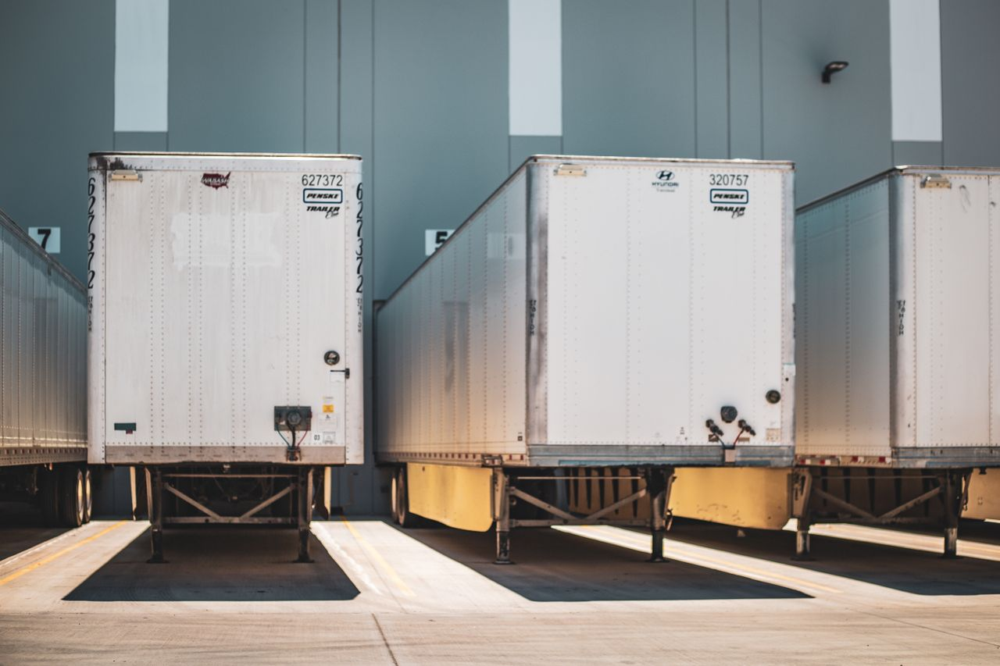

déposer quai-remorques.jpg dans un dossier photos à côté de cette maquette
Le chauffeur : « Bonjour, livraison Surgelés du Littoral pour le quai 32. Voilà mon bon de livraison et le ticket de l'enregistreur. Je peux ouvrir ? »
| Palette | Réf. | Désignation | Cartons |
|---|
Tant que les portes sont fermées, la marchandise est au froid : c'est le bon moment pour lire les papiers.
le chauffeur pose toutes les palettes sur le quai ; le temps hors froid démarre · durée :
Le quai est réfrigéré (+4 °C, voir l'afficheur à droite de la porte), mais c'est bien plus chaud que la remorque à −20 °C. Dès que la porte s'ouvre, tout le lot sort du froid : regarde la jauge en haut, elle a démarré. Le chauffeur pose les palettes ; à toi ensuite de les contrôler vite et bien, chaque geste coûte du temps.
3Le quai : contrôler chaque palette
📄 Revoir le bon de livraison
| Palette | Réf. | Désignation | Cartons |
|---|
4Rentrer le lot en chambre froide, écrire les réserves, faire signer
Règle du quai : le froid d'abord, les papiers ensuite. 1) Rentre le lot accepté en chambre froide (le temps hors froid s'arrête). 2) Écris tes réserves sur le BL et fais-les signer par le chauffeur. Le chauffeur peut attendre ; les surgelés, non.
Une réserve doit être précise : quelle palette, quoi, combien. « Sous réserve de déballage » ne vaut rien : ce n'est pas une réserve.
Le chef de quai : « Attends ! Tes palettes sont toujours sur le quai. Rentre d'abord le lot accepté en chambre froide : le chauffeur, lui, peut attendre cinq minutes ; les surgelés, non. Les papiers, tu les feras juste après. »
Les palettes refusées restent au quai et repartent dans le camion.
| Palette | Réf. | Désignation | Cartons |
|---|
Pour Tristan : ce qui a changé et ce qu'il faut essayer
- Nouveau : un écran par étape. Étape 1 : photo du quai (emplacement prévu), le chauffeur te tend le BL et le ticket imprimé de son enregistreur (au lieu de la courbe).
- Nouveau : étape 2, le déchargement animé (photo du quai intérieur). La porte du quai se lève, l'air froid s'échappe et coule au sol, le chauffeur sort les 5 palettes une à une au transpalette et les pose de part et d'autre de l'allée. Le temps hors froid démarre à l'ouverture de la porte ; le déchargement dure selon le nombre de palettes : 30 s d'ouverture + 1 min par palette, soit 5 min 30 ici (valeurs construites, regroupées dans
DECHARGEMENTpour servir aux exercices de planification de quai). Quai réfrigéré à +4 °C (afficheur sur le mur) et repère hors froid de 30 min (construit) : un parcours juste prend ~20 min, il reste de la marge ; l'élève qui traîne dépasse. Réglementaire (vérifié) : −18 °C à cœur, −15 °C toléré brièvement au déchargement, aucune durée en minutes dans les textes. Bouton « Passer » pour les élèves qui recommencent ; « Revoir » ne coûte rien. - Le transporteur décharge tout d'un coup : un seul temps hors froid pour le lot. Lire l'enregistreur avant de faire décharger ne coûte rien au froid ; le lire après, si.
- Compter : la palette est dessinée en 3D, l'élève compte (couches × cartons par couche, couche du dessus) et saisit son nombre. P1 a une couche du dessus incomplète mais conforme au BL ; P4 a deux cartons en moins, dont un dans le coin du fond.
- Faire le tour : les cartons écrasés de P2 ne se voient que d'un côté.
- L'étiquette : clique sur la petite étiquette d'un carton pour la lire. P5 cache son anomalie là : la référence ne correspond pas au BL.
- Repère : en guidage, le carton le plus haut à gauche en vue de face porte le numéro de la palette (P1, P2…). Fais le tour : il suit le carton. Absent en évaluation.
- En guidage, la règle des couches et le détail du comptage sont affichés ; en évaluation, seulement le total.
- Nouveau : étape 4. Deux tâches dans l'ordre choisi par l'élève : rentrer le lot accepté en chambre froide (3 min, le temps hors froid s'arrête) et écrire les réserves (1 min par ligne) puis faire signer le chauffeur (1 min). Chaque réserve demande la donnée qui la rend précise : température relevée à la sonde (P3), référence lue sur l'étiquette (P5), nombre de cartons écrasés (P2) ou manquants (P4). Les lignes s'écrivent « à la main » sur le BL. En guidage, le chauffeur refuse de signer une réserve vide. Bilan : une ligne par réserve attendue, signature, lot rentré.
- Nouveau (v7) : charte Picard — logo officiel (picard.fr, empreinte vérifiée), bleu Picard
#0011ACen accent (relevé sur le site ; le logo est en#000BF7), fond bleu glacier très pâle ; entrepôt réel nommé. - Nouveau (v8) : le chrono mesure, il ne coupe plus. Note d'évaluation = 15 pts de réception (jalons) + 5 pts de rapidité : 3 sur le temps hors froid (≤ 20 min : 3, ≤ 25 : 2, ≤ 30 : 1) et 2 sur le temps réel (≤ 12 min : 2, ≤ 16 : 1 ; × 4/3 en tiers-temps). Rapidité seulement si la réception est complète (tout décidé, lot rentré, BL signé), en proportion des palettes justes. En guidage, le temps réel est mesuré et affiché au bilan, sans note, pour caler les seuils (12 et 16 min sont provisoires).
- Nouveau (v7) : horloge murale sur la photo du quai (étape 2), sous l'afficheur de température : heure du quai en guidage, temps passé en évaluation.
- Piège « Sous réserve de déballage » : case à cocher dans « Tes réserves ». Cochée, la mention s'écrit sur le BL, le bilan la compte fausse (jalon, aussi en évaluation) ; en guidage, le chef de quai explique qu'elle ne protège de rien.
- Ordre froid / papiers : jamais sanctionné en points. En guidage, si l'élève veut écrire ses réserves avant d'avoir rentré le lot, le chef de quai l'arrête et lui explique la règle (il peut passer outre) ; le bilan la redit. En évaluation, rien : seul le temps hors froid compte.
- Passe en évaluation (chrono réel, tiers-temps) et laisse le temps finir.